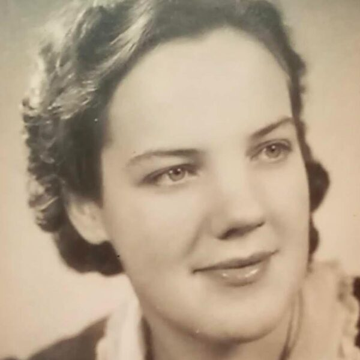

Koerierster · V.K.B.S.
Antoinette ‘Netty’ Offers
Zeventien jaar jong bij het uitbreken van de oorlog, werkt Netty als lokettiste op station Haarlem. Ze neemt deel aan de Spoorwegstaking van september 1944 en sluit zich daarna aan bij het Vrouwelijk Korps Binnenlandse Strijdkrachten als koerierster. Dankzij haar NS-documenten kan ze vrij reizen, ondanks de bezetter.
Vanaf mei 1941 houdt ze vijf dagboeken bij — achthonderd pagina’s vol verhalen, krantenknipsels en verzetsnieuws.